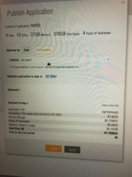
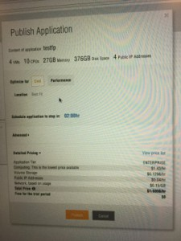

|
|
This was first published on https://blog.dbi-services.com/ravello (2016-09-21)
Republishing here for new followers. The content is related to the the versions available at the publication date
I’m at Oracle Open World and I’m rather focused on database rather than all those Cloud topics, but one product caught my attention at the Oracle ACED Briefing. Oracle bought Ravallo systems at the beginning of the year. What is Ravello? You have virtualized your applications on VMware and want to move them to the Cloud… without any changes.
An application is not a single VM. It’s an ecosystem of VMs working together, linked by one or multiple network interfaces. Moving the virtual machines is easy, thanks to virtualization. But do you change the IP addresses everywhere? This is where you need another layer of virtualization.
Let’s see how it works. With Ravallo you can import your VMs easily. It can connect to your VSphere or you just import an ova. Once they are imported into Ravallo, you can start to build your application with a simple drag and drop of the concerned VMs.
The magic follows. Ravallo parses the VMs metadata and data to discover the ecosystem. Here his the result after having importing a database, two weblogic server servers, and a windows client:
Not only the VMs are there. there is a network here with switches, routers, DNS, DHCP, a fenced network private to my application, all virtualized.
And there’s more: all IP addresses are the same in that private network than on my on-premises VMWare farm. That’s the point. Changing network interfaces, IP addresses, DNS, etc is a nightmare and you don’t have to do it.
This is only the design of the application. Once that application is defined, you can publish it to the Cloud: Oracle Public Cloud, Google one, or AWS.
And this is easy. You can choose that resources are optimized for cost or performance, and you even have an idea of the price:
|  |  |
Time to run our application. As it runs in an isolate environment, you can even run multiple instances of it. But how do you connect to it?
First, you can access the console to each VM from Ravallo though VNC. For external access you create services that set NAT rules and allocate public IP addresses.
Ravallo is nested virtualization: two levels of hypervisors.
{kind=link}
{kind=link}
{kind=link}